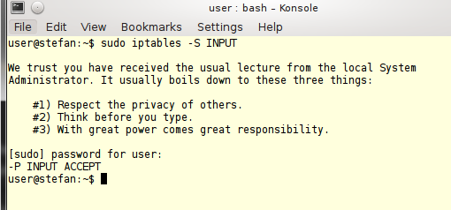

a) + b) Mit dem su-Befehl kann man in den Benutzer wechseln.
Ohne Angabe eines Beutzernames wird Standart maßig root ausgewählt.
Hierbei muss man das Passwort des Nutzers eingeben.
Mit dem sudo-Befehl kann ich einen Befehl mit
Admin-Rechten ausfuehren. Die eingabe eines Passwortes wird hierfür nicht benötigt.
Dies ist sinnvoll, da der Admin-(root)Modus
nur so kurz wie noetig benutzt werden sollte, um Schaden zu
vermeiden. Der User, der den sudo-Befehl ausfuehren moechte, muss vom
Admin auf die Liste der sudo-berechtigten Usern gesetzt werden.
Quelle
c)
Mit der Funktion
# sudo adduser username sudo
wird der user mit sudo berechtigt und kann ab seiner nächsten Anmeldung den sudo Befehl nutzen.
Um seine Admin-Fähigkeit zu beweisen wurde eine iptables-Regel der nachfolgenden Aufgabe angesehen.
